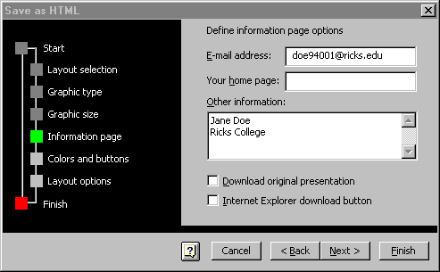
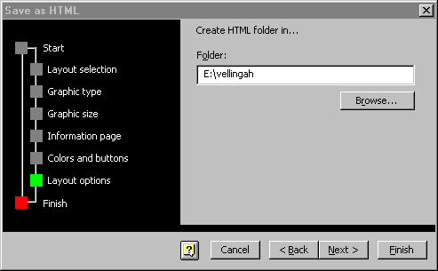
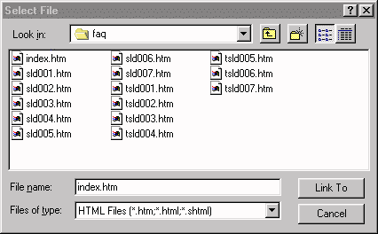

Moving your Power Point Presentation to
the Web
Before you save your Power Point Presentation as an HTML File,
save it as a regular PPT file on your personal storage device.
Your Power Point slide show can be ported
to the web, but in order to do this it must first be converted
to html. The outline below takes you through the conversion
process, step by step.
Saving your Power Point
Presentation as an HTML File
- Open your Power Point presentation. Click on "File".
Click on "Save as html".
- A conversion Wizard will appear with step by step instructions
necessary for the file to be converted successfully.
- Read the box and then click next. (The images below represent
some of the questions the Wizard will require that you answer.
However, not every box that you will experience is shown.).
- The first option is Layout selection. Select New
Layout and click "Next".
- The Page Style option will appear. Choose Standard and click "Next".
- Then, it gives you an option of the graphic type. Choose
gif
or jpeg and click
"Next".

- For graphic size, choose 640 by
480. For the width of the graphics, choose 3/4 the width of the screen (you
can do this by clicking the arrow to the side of the box, or
by typing it in). Click "Next".

- The Information page will then appear. Enter your e-mail
address and then any other information that you would like to
appear, such as your name, school or the grade you teach. Click
"Next".
- The Colors and Buttons page is next. Choose Browser
colors and click "Next".
- Choose the button style of your choice. Click "Next".
- Choose the location of your choice and then click "Next".
- The Layout options screen should appear. Click on the browse button. Find your
Zip drive and double click on it. Then, find your web
folder, highlight it and click on Select.
Click on "Next" and then click on "Finish".

- A box will then appear that asks if you would like to save
the conversion settings you used. You can save them if you would
like to use the same setting at a later time with another slide
show conversion.
- Your presentation should now be saved as many connected HTML
files all within a single folder. To make sure, go to My Computer
and find the E: drive. Double click on it.
- Find your web folder (with your last name and first initial)
and double click on it. If you followed directions you should
see a new folder that has the same name as your regular Power
Point Presentation. Double click on it and you can see all of
the items that it contains.
- Make sure the folder name is correct (no capital letters,
spaces or slashes).
- Make sure that this folder is in your web folder. (If you
found it in your named folder, it is in the right place.) If
it is not, move to your web folder.
Creating a link from the
Web Page to your Power Point Presentation
Using Adobe PageMill, create link to your presentation from
a web page by following these simple steps:
- Type in a word or phrase as you would a regular link.
- Highlight the words
- Click on Browse

- Find your web folder. Open it and located the folder that
contains your converted Power Point presentation. Open it, and
then locate the file named index.htm. Link to that page.
- When you go to Preview Mode, you should be able to click
on this link and find your entire presentation.
Uploading your presentation
to the Web
Move the entire Power Point folder and the page it is linked
from to your folder on the web server using WS_FTP95LE.
(If you cannot remember how to do this, see the link on Uploading Your Web Page).